library(tidyverse) # Para diferentes operaciones
library(readxl) # Para la lectura de archivos de Excel
library(corrplot) # Para las figuras de elipses
library(vegan) # Estimadores de diversidad
library(ggrepel) # Rótulos a los puntos de figuras en ggplot2
library(kableExtra) # Edición de las tablas
library(viridis) # Colores de las figuras
# Instalar la última versión de github para iNEXT
# install.packages('devtools')
library(devtools)
# install_github('AnneChao/iNEXT.3D')
library(iNEXT.3D)
# install_github('AnneChao/iNEXT.4steps')
library(iNEXT.4steps)Resumen
El presente ejercicio consiste en el procesamiento inicial de los datos de la salida de campo realizada por los estudiantes de ecología 1, del programa de Biología en el semestre 2023-II.
Paso a paso para la organización de los datos de los taxones y ambientales.
Paso 1. Cargar Librerías
Elaborar un fragmento: CTRL+ALT+I, Correr el fragmento: CTRL+SHIFT+ENTER, Correr una línea: CTRL+ENTER
Paso 2. Base de datos de los taxones
La base de datos con los 40 taxones se llamará biol. La base con con las 18 variables ambientales se llamará amb y se cargará más adelante (Tabla 1).
# Cargar la base de datos y asignarla como "datos"
biol <- read_xlsx("datos.gral.xlsx", "Taxones1")
# print.Date(datos) # Muestra a toda la base de datos
# head(datos) # head permite mostrar solo 6 filas de la base de datos (datos).
# Impresión de la base de datos
biol %>%
kbl() %>%
kable_classic(full_width=F)| Sitio | Microh | Baetidae | Belidae | Blephariceridae | Calopterygidae | Ceratopogonidae | Chironomidae | Coenagrionidae | Corydalidae | Crambidae | Dixidae | Dugesiidae | Elmidae | Empididae | Gomphidae | Hydrobiidae | Hydropsychidae | Leptoceridae | Leptohyphidae | Leptophlebiidae | Libellulidae | Limnesiidae | Lumbriculidae | Naucoridae | Oligoneuriidae | Perlidae | Psephenidae | Psychodidae | Ptilodactylidae | Simuliidae | Tipulidae | Veliidae | Total |
|---|---|---|---|---|---|---|---|---|---|---|---|---|---|---|---|---|---|---|---|---|---|---|---|---|---|---|---|---|---|---|---|---|---|
| Arimaca | Arena | 0 | 0 | 0 | 0 | 0 | 2 | 0 | 0 | 0 | 0 | 0 | 2 | 0 | 0 | 0 | 0 | 2 | 0 | 0 | 0 | 0 | 0 | 1 | 0 | 1 | 0 | 0 | 0 | 0 | 0 | 0 | 8 |
| Arimaca | Grava | 14 | 0 | 0 | 1 | 0 | 0 | 3 | 0 | 0 | 0 | 0 | 11 | 0 | 0 | 4 | 3 | 0 | 0 | 13 | 0 | 2 | 1 | 0 | 0 | 5 | 0 | 0 | 1 | 5 | 0 | 0 | 63 |
| Arimaca | Hoja | 31 | 0 | 0 | 0 | 1 | 1 | 0 | 1 | 0 | 0 | 0 | 10 | 0 | 0 | 0 | 0 | 2 | 5 | 4 | 0 | 0 | 0 | 0 | 0 | 0 | 0 | 0 | 0 | 13 | 0 | 2 | 70 |
| Caracoli | Arena | 3 | 2 | 0 | 0 | 0 | 1 | 0 | 0 | 0 | 0 | 0 | 12 | 0 | 1 | 0 | 2 | 3 | 0 | 0 | 0 | 0 | 0 | 7 | 0 | 1 | 0 | 0 | 0 | 5 | 0 | 0 | 37 |
| Caracoli | Grava | 11 | 0 | 0 | 0 | 0 | 1 | 0 | 1 | 0 | 0 | 0 | 10 | 1 | 2 | 0 | 10 | 3 | 10 | 34 | 7 | 0 | 0 | 2 | 1 | 5 | 0 | 0 | 0 | 1 | 0 | 1 | 100 |
| Caracoli | Hoja | 4 | 0 | 0 | 0 | 0 | 14 | 0 | 0 | 0 | 0 | 0 | 18 | 0 | 0 | 0 | 3 | 6 | 0 | 1 | 1 | 0 | 1 | 0 | 0 | 5 | 0 | 0 | 2 | 7 | 0 | 0 | 62 |
| PozoAzul | Arena | 14 | 0 | 0 | 0 | 0 | 8 | 0 | 0 | 0 | 0 | 0 | 4 | 0 | 1 | 0 | 0 | 18 | 0 | 3 | 4 | 0 | 0 | 9 | 1 | 0 | 0 | 0 | 0 | 2 | 2 | 25 | 91 |
| PozoAzul | Grava | 31 | 0 | 0 | 0 | 0 | 7 | 0 | 2 | 0 | 0 | 1 | 5 | 0 | 1 | 0 | 4 | 4 | 0 | 36 | 14 | 0 | 4 | 2 | 0 | 16 | 1 | 1 | 7 | 0 | 0 | 1 | 137 |
| PozoAzul | Hoja | 50 | 2 | 1 | 1 | 1 | 4 | 0 | 8 | 1 | 1 | 0 | 56 | 0 | 5 | 1 | 11 | 19 | 6 | 10 | 11 | 0 | 1 | 10 | 4 | 53 | 0 | 0 | 2 | 15 | 1 | 8 | 282 |
2.1 Abreviación de los nombres de los taxones (biol1).
La Tabla 2 muestra los nombres abreviados de los diferentes taxones colectados en el río Gaira.
# Nombres abreviados de los taxones
biol1 <-
biol[,c(-1,-2)] %>%
rename_with(~ abbreviate(.x, minlength = 4))
# Impresión de la tabla con los datos
biol1 %>%
kbl(caption = "", booktabs = F,longtable = T) %>%
kable_classic(full_width = F, html_font = "Cambria")| Batd | Beld | Blph | Clpt | Crtp | Chrn | Cngr | Cryd | Crmb | Dixd | Dgsd | Elmd | Empd | Gmph | Hydrb | Hydrp | Lptc | Lpth | Lptp | Lbll | Lmns | Lmbr | Ncrd | Olgn | Prld | Psph | Psyc | Ptld | Smld | Tpld | Veld | Totl |
|---|---|---|---|---|---|---|---|---|---|---|---|---|---|---|---|---|---|---|---|---|---|---|---|---|---|---|---|---|---|---|---|
| 0 | 0 | 0 | 0 | 0 | 2 | 0 | 0 | 0 | 0 | 0 | 2 | 0 | 0 | 0 | 0 | 2 | 0 | 0 | 0 | 0 | 0 | 1 | 0 | 1 | 0 | 0 | 0 | 0 | 0 | 0 | 8 |
| 14 | 0 | 0 | 1 | 0 | 0 | 3 | 0 | 0 | 0 | 0 | 11 | 0 | 0 | 4 | 3 | 0 | 0 | 13 | 0 | 2 | 1 | 0 | 0 | 5 | 0 | 0 | 1 | 5 | 0 | 0 | 63 |
| 31 | 0 | 0 | 0 | 1 | 1 | 0 | 1 | 0 | 0 | 0 | 10 | 0 | 0 | 0 | 0 | 2 | 5 | 4 | 0 | 0 | 0 | 0 | 0 | 0 | 0 | 0 | 0 | 13 | 0 | 2 | 70 |
| 3 | 2 | 0 | 0 | 0 | 1 | 0 | 0 | 0 | 0 | 0 | 12 | 0 | 1 | 0 | 2 | 3 | 0 | 0 | 0 | 0 | 0 | 7 | 0 | 1 | 0 | 0 | 0 | 5 | 0 | 0 | 37 |
| 11 | 0 | 0 | 0 | 0 | 1 | 0 | 1 | 0 | 0 | 0 | 10 | 1 | 2 | 0 | 10 | 3 | 10 | 34 | 7 | 0 | 0 | 2 | 1 | 5 | 0 | 0 | 0 | 1 | 0 | 1 | 100 |
| 4 | 0 | 0 | 0 | 0 | 14 | 0 | 0 | 0 | 0 | 0 | 18 | 0 | 0 | 0 | 3 | 6 | 0 | 1 | 1 | 0 | 1 | 0 | 0 | 5 | 0 | 0 | 2 | 7 | 0 | 0 | 62 |
| 14 | 0 | 0 | 0 | 0 | 8 | 0 | 0 | 0 | 0 | 0 | 4 | 0 | 1 | 0 | 0 | 18 | 0 | 3 | 4 | 0 | 0 | 9 | 1 | 0 | 0 | 0 | 0 | 2 | 2 | 25 | 91 |
| 31 | 0 | 0 | 0 | 0 | 7 | 0 | 2 | 0 | 0 | 1 | 5 | 0 | 1 | 0 | 4 | 4 | 0 | 36 | 14 | 0 | 4 | 2 | 0 | 16 | 1 | 1 | 7 | 0 | 0 | 1 | 137 |
| 50 | 2 | 1 | 1 | 1 | 4 | 0 | 8 | 1 | 1 | 0 | 56 | 0 | 5 | 1 | 11 | 19 | 6 | 10 | 11 | 0 | 1 | 10 | 4 | 53 | 0 | 0 | 2 | 15 | 1 | 8 | 282 |
Tabla con los nombres completos y abreviados de los taxones
Opción 1:
# Lectura de la base de datos
tabla = read_xlsx("datos.gral.xlsx", "Taxones2")
# Datos en formato largo
tabla =
tabla %>%
pivot_longer(
cols = -c(Sitio),
names_to = "Taxas",
values_to = "Abundancia"
)
# Base de datos abreviada con Sitios
biol1a = data.frame(biol[,1],biol1)
biol1a =
biol1a %>%
group_by(Sitio) %>%
summarise(across(everything(), ~ mean(.x, na.rm = TRUE)))
# Base de datos abreviada
tabla1 =
biol1a %>%
pivot_longer(
cols = -c(Sitio),
names_to = "Taxas",
values_to = "Abundancia"
)
tabla1 = tabla1[1:31,]
# Tabla con los nombres abreviados de las familias
tabla =
tabla %>% # %>% ctrl+shift+enter
select(Taxas)
# Tabla final
tabla = data.frame(tabla, Abrev = tabla1[,2])
colnames(tabla) = c("Taxa", "Abrev")
# Tabla completa
tabla=
tabla[1:31,] %>%
mutate(ID = row_number()) %>%
select(ID, Taxa, Abrev)
# Impresión de la tabla con los datos
tabla %>%
kbl(caption = "", booktabs = F,longtable = T) %>%
kable_classic(full_width = F, html_font = "Cambria")| ID | Taxa | Abrev |
|---|---|---|
| 1 | Baetidae | Batd |
| 2 | Belidae | Beld |
| 3 | Blephariceridae | Blph |
| 4 | Calopterygidae | Clpt |
| 5 | Ceratopogonidae | Crtp |
| 6 | Chironomidae | Chrn |
| 7 | Coenagrionidae | Cngr |
| 8 | Corydalidae | Cryd |
| 9 | Crambidae | Crmb |
| 10 | Dixidae | Dixd |
| 11 | Dugesiidae | Dgsd |
| 12 | Elmidae | Elmd |
| 13 | Empididae | Empd |
| 14 | Gomphidae | Gmph |
| 15 | Hydrobiidae | Hydrb |
| 16 | Hydropsychidae | Hydrp |
| 17 | Leptoceridae | Lptc |
| 18 | Leptohyphidae | Lpth |
| 19 | Leptophlebiidae | Lptp |
| 20 | Libellulidae | Lbll |
| 21 | Limnesiidae | Lmns |
| 22 | Lumbriculidae | Lmbr |
| 23 | Naucoridae | Ncrd |
| 24 | Oligoneuriidae | Olgn |
| 25 | Perlidae | Prld |
| 26 | Psephenidae | Psph |
| 27 | Psychodidae | Psyc |
| 28 | Ptilodactylidae | Ptld |
| 29 | Simuliidae | Smld |
| 30 | Tipulidae | Tpld |
| 31 | Veliidae | Veld |
Opción 2:
# Cargar la tabla de datos
tabla <- read_xlsx("datos.gral.xlsx", "Taxones2")
# Tabla en columna con nombre de los taxones
tabla <-
tabla %>%
pivot_longer(-Sitio,
names_to = "Taxas",
values_to = "Abundancia") %>%
select(Taxas) %>%
distinct()
# Crear base agregada abreviada y en formato largo
tabla1 <- read_xlsx("datos.gral.xlsx", "Taxones2")
tabla1 <-
tabla1 %>%
rename_with(~ abbreviate(.x, minlength = 4), -Sitio) %>%
group_by(Sitio) %>%
summarise(across(everything(), ~ mean(.x, na.rm = TRUE))) %>%
pivot_longer(-Sitio,
names_to = "Taxas",
values_to = "Abundancia") %>%
slice_head(n = 31)
# Tabla final con nombres y abreviaturas
tabla <-
tabla %>%
slice_head(n = 31) %>%
mutate(Abrev = tabla1$Taxas,
ID = row_number()) %>%
select(ID, Taxa = Taxas, Abrev)
# Imprimir la tabla con 6 primeras filas
head(tabla) %>%
kbl(booktabs = FALSE, longtable = TRUE) %>%
kable_classic(full_width = FALSE, html_font = "Cambria")| ID | Taxa | Abrev |
|---|---|---|
| 1 | Baetidae | Batd |
| 2 | Belidae | Beld |
| 3 | Blephariceridae | Blph |
| 4 | Calopterygidae | Clpt |
| 5 | Ceratopogonidae | Crtp |
| 6 | Chironomidae | Chrn |
2.2 Taxones más abundantes con nombres abreviados (biol2).
# Extraer los promedios de las abundancias
prom <- colMeans(biol1[,1:31]) # Columna 32 se excluye por ser el total de ab.
# Extraer los 15 taxones más abundantes. FALSE muestra las 15 menos abundantes
ab <- names(sort(prom, decreasing = TRUE)[1:15])
# Crear un nuevo dataframe con las dos columnas seleccionadas
biol2 <- data.frame(Sitio = biol[,1], biol1[, ab])
biol2 %>%
kbl(caption = "", booktabs = F,longtable = T) %>%
kable_classic(full_width = F, html_font = "Cambria")| Sitio | Batd | Elmd | Lptp | Prld | Lptc | Smld | Chrn | Lbll | Veld | Hydrp | Ncrd | Lpth | Cryd | Ptld | Gmph |
|---|---|---|---|---|---|---|---|---|---|---|---|---|---|---|---|
| Arimaca | 0 | 2 | 0 | 1 | 2 | 0 | 2 | 0 | 0 | 0 | 1 | 0 | 0 | 0 | 0 |
| Arimaca | 14 | 11 | 13 | 5 | 0 | 5 | 0 | 0 | 0 | 3 | 0 | 0 | 0 | 1 | 0 |
| Arimaca | 31 | 10 | 4 | 0 | 2 | 13 | 1 | 0 | 2 | 0 | 0 | 5 | 1 | 0 | 0 |
| Caracoli | 3 | 12 | 0 | 1 | 3 | 5 | 1 | 0 | 0 | 2 | 7 | 0 | 0 | 0 | 1 |
| Caracoli | 11 | 10 | 34 | 5 | 3 | 1 | 1 | 7 | 1 | 10 | 2 | 10 | 1 | 0 | 2 |
| Caracoli | 4 | 18 | 1 | 5 | 6 | 7 | 14 | 1 | 0 | 3 | 0 | 0 | 0 | 2 | 0 |
| PozoAzul | 14 | 4 | 3 | 0 | 18 | 2 | 8 | 4 | 25 | 0 | 9 | 0 | 0 | 0 | 1 |
| PozoAzul | 31 | 5 | 36 | 16 | 4 | 0 | 7 | 14 | 1 | 4 | 2 | 0 | 2 | 7 | 1 |
| PozoAzul | 50 | 56 | 10 | 53 | 19 | 15 | 4 | 11 | 8 | 11 | 10 | 6 | 8 | 2 | 5 |
2.3 Promedios de los 15 taxones más abundantes (biol3).
# Extraer los promedios de las abundancias
# Promedios de abundancia de los taxones
biol3 <-
biol2 %>%
group_by(Sitio) %>% # Agrupamiento por sitios
summarise(across(everything(), ~ mean(.x, na.rm = TRUE)))
# Impresión de la tabla con los datos
biol3 %>%
kbl(caption = "", booktabs = F,longtable = T) %>%
kable_classic(full_width = F, html_font = "Cambria")| Sitio | Batd | Elmd | Lptp | Prld | Lptc | Smld | Chrn | Lbll | Veld | Hydrp | Ncrd | Lpth | Cryd | Ptld | Gmph |
|---|---|---|---|---|---|---|---|---|---|---|---|---|---|---|---|
| Arimaca | 15.00000 | 7.666667 | 5.666667 | 2.000000 | 1.333333 | 6.000000 | 1.000000 | 0.000000 | 0.6666667 | 1 | 0.3333333 | 1.666667 | 0.3333333 | 0.3333333 | 0.000000 |
| Caracoli | 6.00000 | 13.333333 | 11.666667 | 3.666667 | 4.000000 | 4.333333 | 5.333333 | 2.666667 | 0.3333333 | 5 | 3.0000000 | 3.333333 | 0.3333333 | 0.6666667 | 1.000000 |
| PozoAzul | 31.66667 | 21.666667 | 16.333333 | 23.000000 | 13.666667 | 5.666667 | 6.333333 | 9.666667 | 11.3333333 | 5 | 7.0000000 | 2.000000 | 3.3333333 | 3.0000000 | 2.333333 |
Paso 3. Base de datos ambiental
amb <- read_xlsx("datos.gral.xlsx", "fquímicos")
amb = amb[,c(-13,-15, -16, -17)]
# Impresión de la tabla con los datos
amb %>%
kbl(caption = "", booktabs = F,longtable = T) %>%
kable_classic(full_width = F, html_font = "Cambria")| Sitio | Replica | Temperatura | Conductividad | Oxigeno | Luz | Amonio | Nitrito | Nitrato | Fosfato | Roca | Grava | Sed | Prof.Media | Ancho | Vel.prom | Area | Caudal | Perim | Radio | Prof.Hidra | No.Froude |
|---|---|---|---|---|---|---|---|---|---|---|---|---|---|---|---|---|---|---|---|---|---|
| Arimaca | 1 | 22.3 | 77.2 | 5.21 | 2160 | 1e-04 | 0.0105 | 0.1427 | 0.0883 | 35.71429 | 28.57143 | 7.142857 | 0.2350000 | 6.60 | 0.04 | 1.551000 | 0.0620400 | 7.070000 | 0.2193777 | 0.2350000 | 0.0263580 |
| Arimaca | 2 | 21.8 | 78.4 | 5.33 | 2500 | 1e-04 | 0.0152 | 0.1421 | 0.0927 | 0.00000 | 46.66667 | 6.666667 | 0.2378667 | 6.80 | 0.08 | 1.617493 | 0.1293995 | 7.275733 | 0.2223134 | 0.2378667 | 0.0523975 |
| Arimaca | 3 | 21.9 | 82.1 | 5.31 | 2220 | 1e-04 | 0.0152 | 0.1429 | 0.1689 | 60.00000 | 10.00000 | 0.000000 | 0.2228000 | 9.30 | 0.02 | 2.072040 | 0.0414408 | 9.745600 | 0.2126129 | 0.2228000 | 0.0135350 |
| Caracoli | 1 | 23.2 | 97.4 | 4.83 | 4600 | 1e-02 | 0.0355 | 0.2061 | 0.4780 | 55.55556 | 44.44444 | 0.000000 | 0.3222222 | 3.83 | 0.60 | 1.234111 | 0.7404667 | 4.474444 | 0.2758133 | 0.3222222 | 0.3376451 |
| Caracoli | 2 | 23.1 | 93.9 | 4.82 | 2400 | 5e-02 | 0.0368 | 0.2055 | 0.5765 | 0.00000 | 62.50000 | 0.000000 | 0.2711250 | 5.74 | 0.20 | 1.556258 | 0.3112515 | 6.282250 | 0.2477229 | 0.2711250 | 0.1226965 |
| Caracoli | 3 | 23.0 | 79.8 | 5.14 | 4100 | 3e-02 | 0.0355 | 0.2059 | 0.5855 | 38.46154 | 46.15385 | 0.000000 | 0.3376923 | 5.74 | 0.30 | 1.938354 | 0.5815062 | 6.415385 | 0.3021415 | 0.3376923 | 0.1649102 |
| PozoAzul | 1 | 20.1 | 61.5 | 5.85 | 2820 | 1e-04 | 0.0092 | 0.1650 | 0.5657 | 51.85185 | 33.33333 | 0.000000 | 0.1911538 | 13.40 | 0.06 | 2.561462 | 0.1536877 | 13.782308 | 0.1858514 | 0.1911538 | 0.0438376 |
| PozoAzul | 2 | 20.2 | 62.1 | 5.82 | 4240 | 1e-04 | 0.0179 | 0.1620 | 0.0569 | 22.22222 | 44.44444 | 0.000000 | 0.2900000 | 8.60 | 0.08 | 2.494000 | 0.1995200 | 9.180000 | 0.2716776 | 0.2900000 | 0.0474546 |
| PozoAzul | 3 | 20.1 | 62.2 | 5.81 | 2710 | 1e-04 | 0.0092 | 0.1590 | 0.0703 | 56.25000 | 37.50000 | 0.000000 | 0.2637500 | 7.60 | 0.07 | 2.004500 | 0.1403150 | 8.127500 | 0.2466318 | 0.2637500 | 0.0435400 |
3.1 Promedios de las variables ambientales (amb1).
# Promedios de variables ambientales
amb1 <-
amb %>%
group_by(Sitio) %>%
summarise(across(-Replica, mean, na.rm = TRUE, .names = "{.col}"))
# Impresión de la tabla con los datos
amb1 %>%
kbl(caption = "", booktabs = F,longtable = T) %>%
kable_classic(full_width = F, html_font = "Cambria")| Sitio | Temperatura | Conductividad | Oxigeno | Luz | Amonio | Nitrito | Nitrato | Fosfato | Roca | Grava | Sed | Prof.Media | Ancho | Vel.prom | Area | Caudal | Perim | Radio | Prof.Hidra | No.Froude |
|---|---|---|---|---|---|---|---|---|---|---|---|---|---|---|---|---|---|---|---|---|
| Arimaca | 22.00000 | 79.23333 | 5.283333 | 2293.333 | 1e-04 | 0.0136333 | 0.1425667 | 0.1166333 | 31.90476 | 28.41270 | 4.603175 | 0.2318889 | 7.566667 | 0.0466667 | 1.746844 | 0.0776268 | 8.030444 | 0.2181013 | 0.2318889 | 0.0307635 |
| Caracoli | 23.10000 | 90.36667 | 4.930000 | 3700.000 | 3e-02 | 0.0359333 | 0.2058333 | 0.5466667 | 31.33903 | 51.03276 | 0.000000 | 0.3103465 | 5.103333 | 0.3666667 | 1.576241 | 0.5444081 | 5.724026 | 0.2752259 | 0.3103465 | 0.2084173 |
| PozoAzul | 20.13333 | 61.93333 | 5.826667 | 3256.667 | 1e-04 | 0.0121000 | 0.1620000 | 0.2309667 | 43.44136 | 38.42593 | 0.000000 | 0.2483013 | 9.866667 | 0.0700000 | 2.353321 | 0.1645076 | 10.363269 | 0.2347203 | 0.2483013 | 0.0449441 |
Paso 4. Exploración gráfica de relaciones y de variaciones.
4.1 Relaciones entre todos los taxones.
La Figura 1 muestra que las relaciones entre las parejas de taxones comparados suelen ser de tipo lineal positivas, lo cual indica que la presencia y la abundancia de algunas familias se asocian con la presencia de otros taxones.
# Matriz de correlación con los taxones abreviados
M = cor(biol1)
# Figura de correlaciones
corrplot(M, "ellipse", order= "AOE")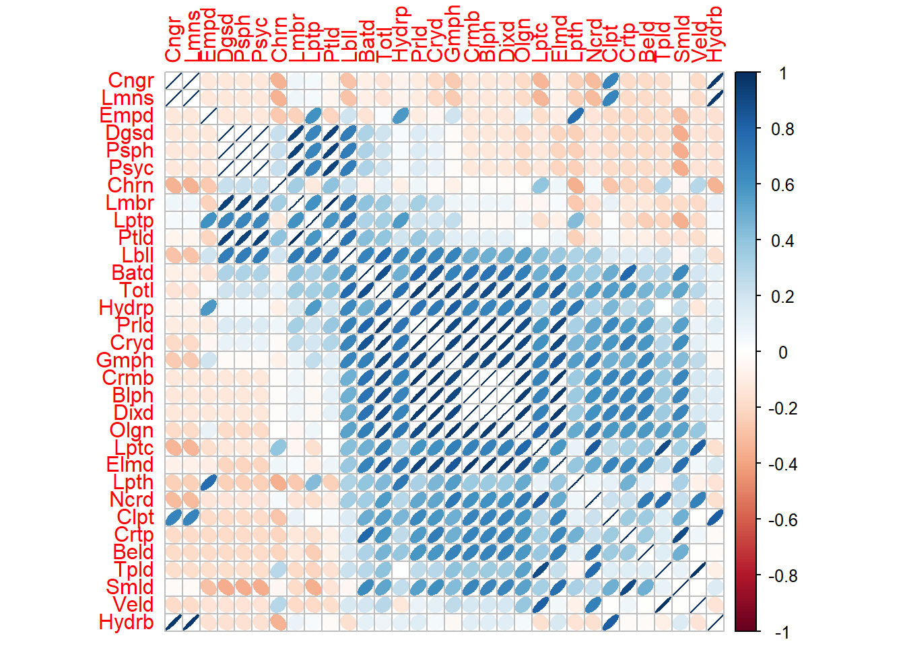
4.2 Relaciones entre los 15 taxones más abundantes.
# Matriz de correlación
M1 = cor(biol2[,-1])
# Figura de correlaciones
corrplot(M1, "ellipse", order= "AOE")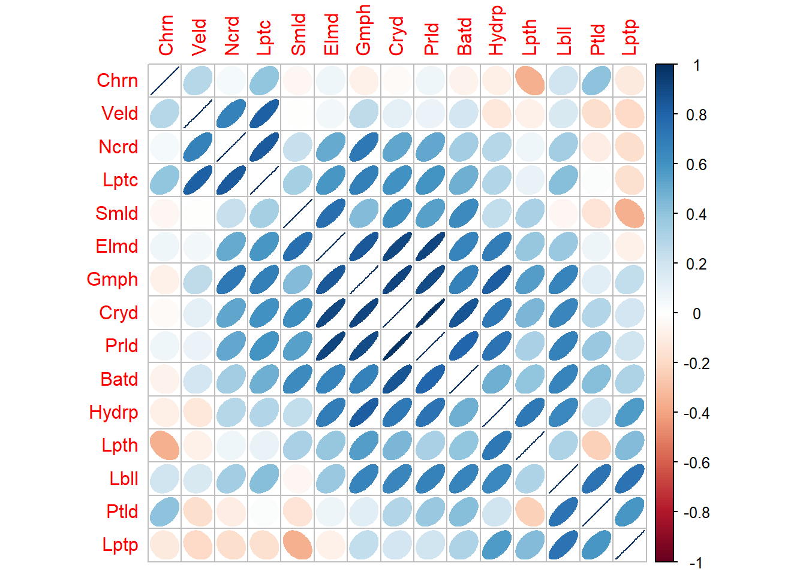
4.3 Relaciones entre los promedios de los 15 taxones más abundantes y las variables ambientales.
La Figura 2 muestra que …
# Matriz de correlación
M = cor(amb1[,-1],biol3[,-1])
# Figura de correlaciones
corrplot(M, "ellipse")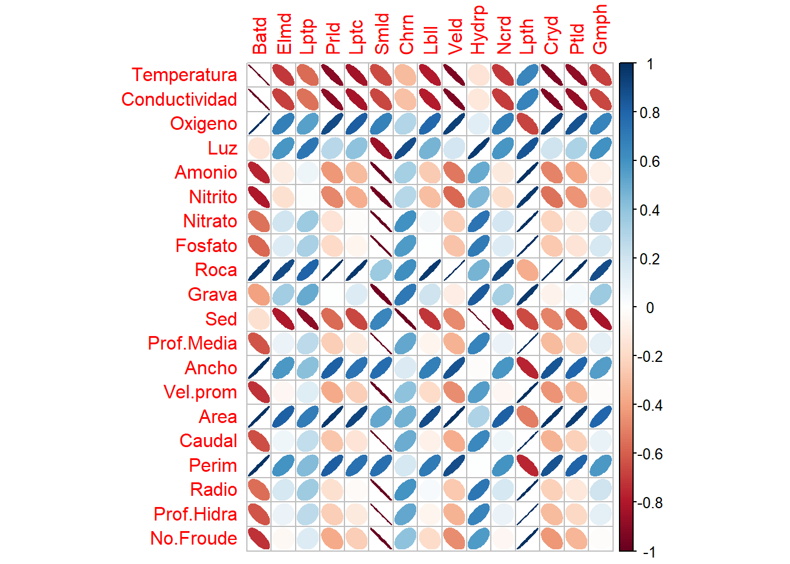
# Matriz de correlación
M = cor(amb[,c(-1, -2)],biol1)
# Figura de correlaciones
corrplot(M, "ellipse")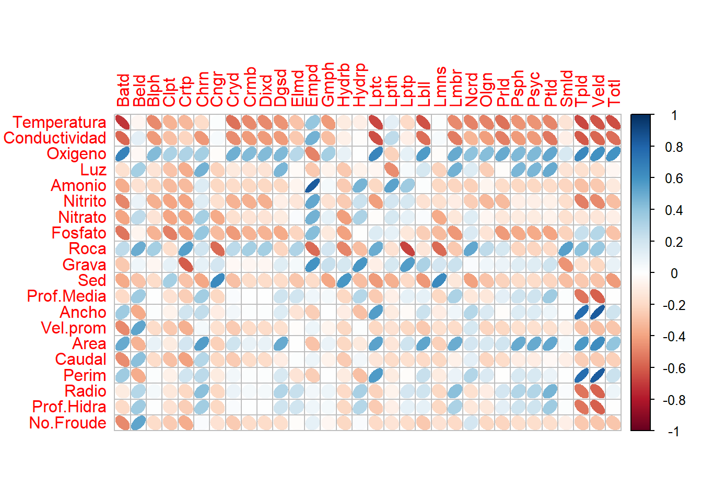
4.3 Relaciones entre los taxones y las variables ambientales. Figuras de burbujas
# Dataframe con ambientales y biológicas abreviadas
# Hay que dejar solo el factor a graficar (sitios)
datos = data.frame(amb[,-2],biol1)
# Impresión de la tabla con los datos
datos %>%
kbl(caption = "", booktabs = F,longtable = T) %>%
kable_classic(full_width = F, html_font = "Cambria")| Sitio | Temperatura | Conductividad | Oxigeno | Luz | Amonio | Nitrito | Nitrato | Fosfato | Roca | Grava | Sed | Prof.Media | Ancho | Vel.prom | Area | Caudal | Perim | Radio | Prof.Hidra | No.Froude | Batd | Beld | Blph | Clpt | Crtp | Chrn | Cngr | Cryd | Crmb | Dixd | Dgsd | Elmd | Empd | Gmph | Hydrb | Hydrp | Lptc | Lpth | Lptp | Lbll | Lmns | Lmbr | Ncrd | Olgn | Prld | Psph | Psyc | Ptld | Smld | Tpld | Veld | Totl |
|---|---|---|---|---|---|---|---|---|---|---|---|---|---|---|---|---|---|---|---|---|---|---|---|---|---|---|---|---|---|---|---|---|---|---|---|---|---|---|---|---|---|---|---|---|---|---|---|---|---|---|---|---|
| Arimaca | 22.3 | 77.2 | 5.21 | 2160 | 1e-04 | 0.0105 | 0.1427 | 0.0883 | 35.71429 | 28.57143 | 7.142857 | 0.2350000 | 6.60 | 0.04 | 1.551000 | 0.0620400 | 7.070000 | 0.2193777 | 0.2350000 | 0.0263580 | 0 | 0 | 0 | 0 | 0 | 2 | 0 | 0 | 0 | 0 | 0 | 2 | 0 | 0 | 0 | 0 | 2 | 0 | 0 | 0 | 0 | 0 | 1 | 0 | 1 | 0 | 0 | 0 | 0 | 0 | 0 | 8 |
| Arimaca | 21.8 | 78.4 | 5.33 | 2500 | 1e-04 | 0.0152 | 0.1421 | 0.0927 | 0.00000 | 46.66667 | 6.666667 | 0.2378667 | 6.80 | 0.08 | 1.617493 | 0.1293995 | 7.275733 | 0.2223134 | 0.2378667 | 0.0523975 | 14 | 0 | 0 | 1 | 0 | 0 | 3 | 0 | 0 | 0 | 0 | 11 | 0 | 0 | 4 | 3 | 0 | 0 | 13 | 0 | 2 | 1 | 0 | 0 | 5 | 0 | 0 | 1 | 5 | 0 | 0 | 63 |
| Arimaca | 21.9 | 82.1 | 5.31 | 2220 | 1e-04 | 0.0152 | 0.1429 | 0.1689 | 60.00000 | 10.00000 | 0.000000 | 0.2228000 | 9.30 | 0.02 | 2.072040 | 0.0414408 | 9.745600 | 0.2126129 | 0.2228000 | 0.0135350 | 31 | 0 | 0 | 0 | 1 | 1 | 0 | 1 | 0 | 0 | 0 | 10 | 0 | 0 | 0 | 0 | 2 | 5 | 4 | 0 | 0 | 0 | 0 | 0 | 0 | 0 | 0 | 0 | 13 | 0 | 2 | 70 |
| Caracoli | 23.2 | 97.4 | 4.83 | 4600 | 1e-02 | 0.0355 | 0.2061 | 0.4780 | 55.55556 | 44.44444 | 0.000000 | 0.3222222 | 3.83 | 0.60 | 1.234111 | 0.7404667 | 4.474444 | 0.2758133 | 0.3222222 | 0.3376451 | 3 | 2 | 0 | 0 | 0 | 1 | 0 | 0 | 0 | 0 | 0 | 12 | 0 | 1 | 0 | 2 | 3 | 0 | 0 | 0 | 0 | 0 | 7 | 0 | 1 | 0 | 0 | 0 | 5 | 0 | 0 | 37 |
| Caracoli | 23.1 | 93.9 | 4.82 | 2400 | 5e-02 | 0.0368 | 0.2055 | 0.5765 | 0.00000 | 62.50000 | 0.000000 | 0.2711250 | 5.74 | 0.20 | 1.556258 | 0.3112515 | 6.282250 | 0.2477229 | 0.2711250 | 0.1226965 | 11 | 0 | 0 | 0 | 0 | 1 | 0 | 1 | 0 | 0 | 0 | 10 | 1 | 2 | 0 | 10 | 3 | 10 | 34 | 7 | 0 | 0 | 2 | 1 | 5 | 0 | 0 | 0 | 1 | 0 | 1 | 100 |
| Caracoli | 23.0 | 79.8 | 5.14 | 4100 | 3e-02 | 0.0355 | 0.2059 | 0.5855 | 38.46154 | 46.15385 | 0.000000 | 0.3376923 | 5.74 | 0.30 | 1.938354 | 0.5815062 | 6.415385 | 0.3021415 | 0.3376923 | 0.1649102 | 4 | 0 | 0 | 0 | 0 | 14 | 0 | 0 | 0 | 0 | 0 | 18 | 0 | 0 | 0 | 3 | 6 | 0 | 1 | 1 | 0 | 1 | 0 | 0 | 5 | 0 | 0 | 2 | 7 | 0 | 0 | 62 |
| PozoAzul | 20.1 | 61.5 | 5.85 | 2820 | 1e-04 | 0.0092 | 0.1650 | 0.5657 | 51.85185 | 33.33333 | 0.000000 | 0.1911538 | 13.40 | 0.06 | 2.561462 | 0.1536877 | 13.782308 | 0.1858514 | 0.1911538 | 0.0438376 | 14 | 0 | 0 | 0 | 0 | 8 | 0 | 0 | 0 | 0 | 0 | 4 | 0 | 1 | 0 | 0 | 18 | 0 | 3 | 4 | 0 | 0 | 9 | 1 | 0 | 0 | 0 | 0 | 2 | 2 | 25 | 91 |
| PozoAzul | 20.2 | 62.1 | 5.82 | 4240 | 1e-04 | 0.0179 | 0.1620 | 0.0569 | 22.22222 | 44.44444 | 0.000000 | 0.2900000 | 8.60 | 0.08 | 2.494000 | 0.1995200 | 9.180000 | 0.2716776 | 0.2900000 | 0.0474546 | 31 | 0 | 0 | 0 | 0 | 7 | 0 | 2 | 0 | 0 | 1 | 5 | 0 | 1 | 0 | 4 | 4 | 0 | 36 | 14 | 0 | 4 | 2 | 0 | 16 | 1 | 1 | 7 | 0 | 0 | 1 | 137 |
| PozoAzul | 20.1 | 62.2 | 5.81 | 2710 | 1e-04 | 0.0092 | 0.1590 | 0.0703 | 56.25000 | 37.50000 | 0.000000 | 0.2637500 | 7.60 | 0.07 | 2.004500 | 0.1403150 | 8.127500 | 0.2466318 | 0.2637500 | 0.0435400 | 50 | 2 | 1 | 1 | 1 | 4 | 0 | 8 | 1 | 1 | 0 | 56 | 0 | 5 | 1 | 11 | 19 | 6 | 10 | 11 | 0 | 1 | 10 | 4 | 53 | 0 | 0 | 2 | 15 | 1 | 8 | 282 |
# Base de datos con variables ambientales seleccionadas
# Eliminar ambientales que no se usarán
datos1 = datos[,-c(2,3,5,7:12, 14:21)]
# Base de datos en formato largo, sin ambientales
datos1a <-
datos1 %>%
select(-Totl) %>%
pivot_longer(
cols = -c(Sitio, Oxigeno, Amonio, Prof.Media),
names_to = "Taxas",
values_to = "Abundancia"
)
# Extraer a los valores de abundancias > 0
datos1a <-
datos1a %>%
filter(Abundancia > 0)# Configurar los factores requeridos
datos1a$Taxas = as.factor(datos1a$Taxas)
datos1a$Sitio = as.factor(datos1a$Sitio)
# Volver factor al resto de ambientales
# Calcular la Abundancia total por grupo, para luego ordenar taxones
abundance_order1 <-
datos1a %>%
group_by(Taxas) %>%
summarise(total_abundance = sum(Abundancia)) %>%
arrange((total_abundance)) %>%
pull(Taxas)
# Ordenar taxones de menor a mayor abundancia
datos1a$Taxas <- factor(datos1a$Taxas, levels = abundance_order1)# Resumen estadístico de las variables ambientales seleccionadas
summary(datos[,-c(1, 2,3,5,7:12, 14:53)]) Oxigeno Amonio Prof.Media
Min. :4.820 Min. :0.00010 Min. :0.1912
1st Qu.:5.140 1st Qu.:0.00010 1st Qu.:0.2350
Median :5.310 Median :0.00010 Median :0.2637
Mean :5.347 Mean :0.01007 Mean :0.2635
3rd Qu.:5.810 3rd Qu.:0.01000 3rd Qu.:0.2900
Max. :5.850 Max. :0.05000 Max. :0.3377 library(viridis)
# Gráfico mejorado con eje Y ordenado por Salinidad (más abundante en la parte superior)
ggplot(datos1a, aes(x = Oxigeno, y = Taxas, size = Abundancia, color = Sitio)) +
geom_point(alpha = 0.7) +
scale_size(range = c(1.4, 19)) +
scale_color_viridis(discrete = TRUE) +
scale_size(name = "Tamaño", range = c(1, 8)) +
scale_x_continuous(
limits = c(4.7, 6), # Rangos que dependen de la variable ambiental
breaks = seq(4.7, 6, by = 0.4) # Establecer intervalos de 1.000
) +
theme_bw() +
theme(
panel.grid.major = element_blank(), # Eliminar la cuadrícula principal
panel.grid.minor = element_blank(), # Eliminar la cuadrícula menor
axis.ticks.y = element_line(color = "black"), # Marcas de graduación del eje y
axis.text.x = element_text(size = 9, angle = 45, hjust = 1), # Rotar los valores del eje x a 45 grados
axis.text.y = element_text(size = 9), # Tamaño del texto en el eje y
axis.title.y = element_blank(), # Quitar el título del eje y
) +
geom_vline(xintercept = c(4.7, 5.1, 5.5, 5.9), color = "gray") +
guides(
size = guide_legend(title = NULL,
override.aes = list(shape = 1,
color = "#377eb8",
stroke = 1.2)), # Grosor de los círculos
color = guide_legend(title = NULL,
override.aes = list(size = 5)) # Elimina el título de la leyenda
)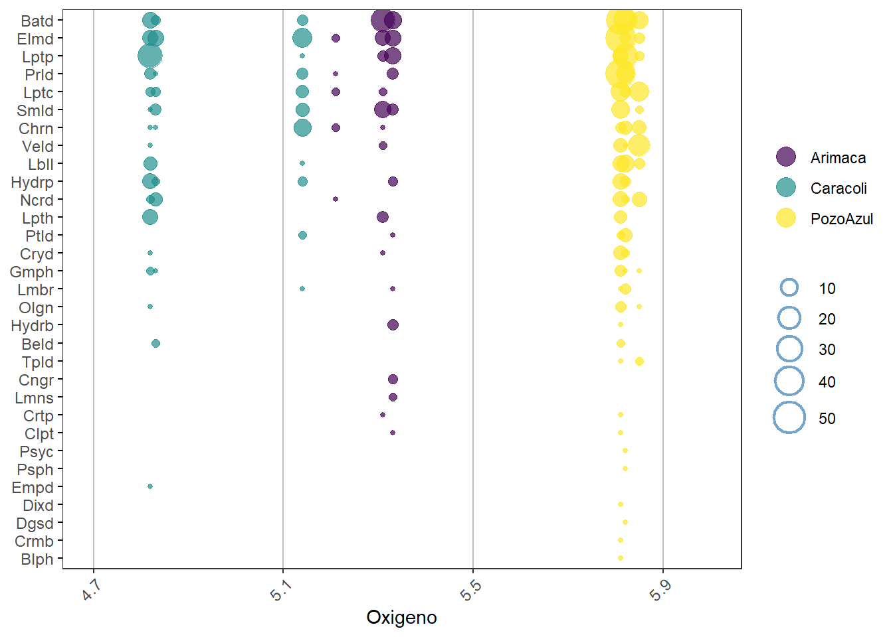
Relaciones con el Amonio
ggplot(datos1a, aes(x = Amonio, y = Taxas, size = Abundancia, color = Sitio)) +
geom_point(alpha = 0.7) +
scale_size(range = c(1.4, 19)) +
scale_color_viridis(discrete = TRUE) +
scale_size(name = "Tamaño", range = c(1, 8)) +
scale_x_continuous(
limits = c(0.0001, 0.05), # Rangos que dependen de la variable ambiental
breaks = seq(0.0001, 0.05, by = 0.01) # Establecer intervalos de 1.000
) +
theme_bw() +
theme(
panel.grid.major = element_blank(), # Eliminar la cuadrícula principal
panel.grid.minor = element_blank(), # Eliminar la cuadrícula menor
axis.ticks.y = element_line(color = "black"), # Marcas de graduación del eje y
axis.text.x = element_text(size = 9, angle = 45, hjust = 1), # Rotar los valores del eje x a 45 grados
axis.text.y = element_text(size = 9), # Tamaño del texto en el eje y
axis.title.y = element_blank(), # Quitar el título del eje y
) +
geom_vline(xintercept = c(0.0001, 0.0101, 0.0201, 0.0301,
0.0401, 0.0501), color = "gray") +
guides(
size = guide_legend(title = NULL,
override.aes = list(shape = 1,
color = "#377eb8",
stroke = 1.2)), # Grosor de los círculos
color = guide_legend(title = NULL,
override.aes = list(size = 5)) # Elimina el título de la leyenda
)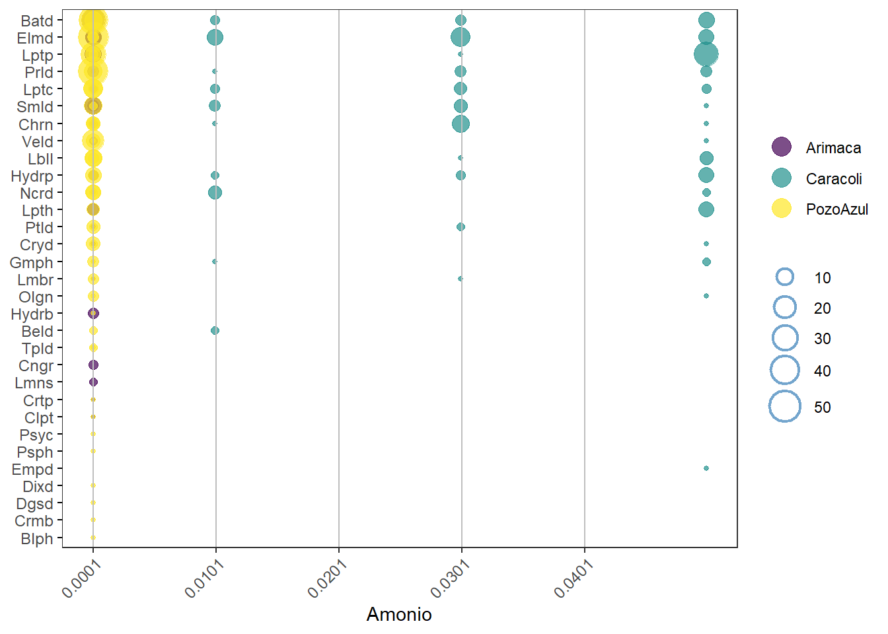
4.4 Diferencias entre taxones por sitios y por microhábitats - cajas.
# View(biol)
biol.dif <-
biol[,-34] %>%
gather(Taxones, Abundancia, -Sitio, -Microh)
# Impresión de la tabla con los seis (6) primeros datos (filas)
head(biol.dif) %>%
kbl(caption = "", booktabs = F,longtable = T) %>%
kable_classic(full_width = F, html_font = "Cambria")| Sitio | Microh | Taxones | Abundancia |
|---|---|---|---|
| Arimaca | Arena | Baetidae | 0 |
| Arimaca | Grava | Baetidae | 14 |
| Arimaca | Hoja | Baetidae | 31 |
| Caracoli | Arena | Baetidae | 3 |
| Caracoli | Grava | Baetidae | 11 |
| Caracoli | Hoja | Baetidae | 4 |
La Figura 3 muestra…
# Buscar en google: colorbrewer2
ggplot(biol.dif, aes(x=Sitio, y= Abundancia)) +
geom_boxplot(aes(fill = Sitio)) +
scale_y_continuous(trans = "log10") + # Aplicar la transformación logarítmica
labs(title = "",
x = "Sitios", fill = "Sitios",
y = expression(log[10]~(Abundancia~de~Insectos))
) +
scale_fill_viridis(discrete = TRUE) +
theme_bw()+
theme(panel.grid = element_blank())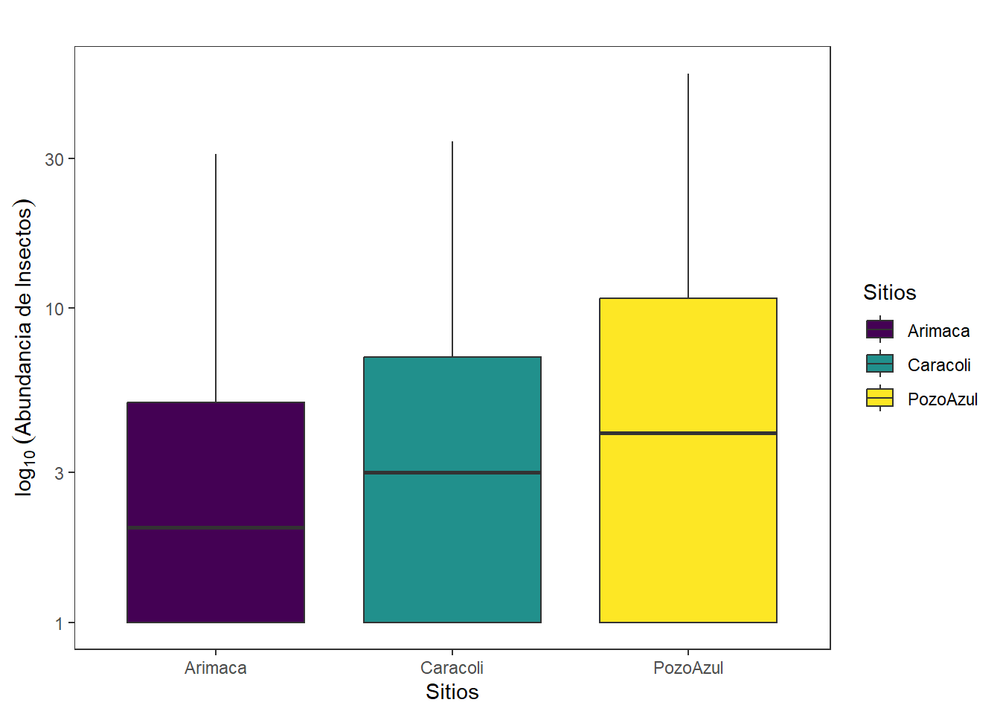
Ejercicio 1: Graficar por tipos de microhábitats
# Buscar en google: colorbrewer2
ggplot(biol.dif, aes(x=Microh, y= Abundancia)) +
geom_boxplot(aes(fill = Microh)) +
scale_y_continuous(trans = "log10") + # Aplicar la transformación logarítmica
labs(title = "",
x = "Microhábitats", fill = "Microhábitats",
y = expression(log[10]~(Abundancia~de~Insectos))
) +
scale_fill_viridis(discrete = TRUE) +
theme_bw()+
theme(panel.grid = element_blank())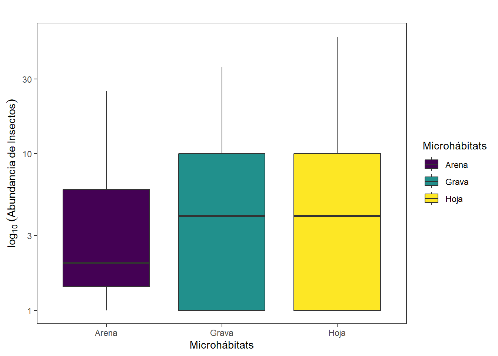
# Buscar en google: colorbrewer2
ggplot(biol.dif, aes(x=Microh, y= Abundancia)) +
geom_boxplot(aes(fill = Microh)) +
scale_y_continuous(trans = "log10") + # Aplicar la transformación logarítmica
labs(title = "",
x = "", fill = "Microhábitats",
y = expression(log[10]~(Abundancia~de~Insectos))
) +
facet_wrap(~ Sitio,scales="free") +
scale_fill_viridis(discrete = TRUE) +
theme_bw()+
theme(panel.grid = element_blank())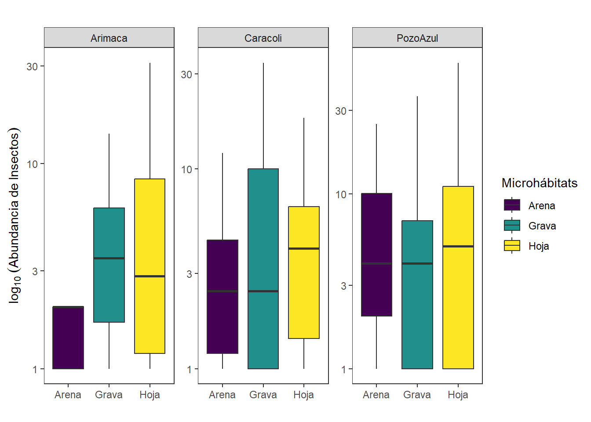
# Resumen estadístico "datos_resum"
datos_resum <-
biol.dif %>% # Base de datos resumida
group_by(Sitio,Microh) %>% # Factor o variable agrupadora
summarise(datos.m = mean(Abundancia), # Media de cada grupo del factor
datos.de = sd(Abundancia), # Desviacioes estándar de cada grupo
datos.var = var(Abundancia), # Varianzas de cada grupo
n.Ab = n(), # Tamaño de cada grupo
datos.ee = sd(Abundancia)/sqrt(n())) # Error estándar de cada grupo`summarise()` has grouped output by 'Sitio'. You can override using the
`.groups` argument.# Impresión de la tabla
datos_resum %>%
kbl(caption = "", booktabs = F,longtable = T) %>%
kable_classic(full_width = F, html_font = "Cambria")| Sitio | Microh | datos.m | datos.de | datos.var | n.Ab | datos.ee |
|---|---|---|---|---|---|---|
| Arimaca | Arena | 0.2580645 | 0.6307531 | 0.3978495 | 31 | 0.1132866 |
| Arimaca | Grava | 2.0322581 | 3.8685387 | 14.9655914 | 31 | 0.6948101 |
| Arimaca | Hoja | 2.2580645 | 6.1208264 | 37.4645161 | 31 | 1.0993329 |
| Caracoli | Arena | 1.1935484 | 2.6002481 | 6.7612903 | 31 | 0.4670184 |
| Caracoli | Grava | 3.2258065 | 6.7117294 | 45.0473118 | 31 | 1.2054622 |
| Caracoli | Hoja | 2.0000000 | 4.2347767 | 17.9333333 | 31 | 0.7605883 |
| PozoAzul | Arena | 2.9354839 | 5.9829507 | 35.7956989 | 31 | 1.0745697 |
| PozoAzul | Grava | 4.4193548 | 8.7322170 | 76.2516129 | 31 | 1.5683525 |
| PozoAzul | Hoja | 9.0967742 | 15.4323358 | 238.1569892 | 31 | 2.7717293 |
# Figura 1 (f1)
ggplot(datos_resum, aes(x=Sitio, y=datos.m, fill=Microh)) +
geom_bar(stat="identity", color="black",
position=position_dodge()) +
geom_errorbar(aes(ymin=datos.m,
ymax=datos.m+datos.de), width=.2,
position=position_dodge(.9)) +
labs(x="", y = "log10(Abundancia de Insectos)")+
scale_fill_manual(values=c('#E69F00','#4daf4a','#377eb8')) +
facet_wrap(~ Sitio,scales="free") +
theme_bw() +
theme(axis.text.x = element_blank()) +
theme(panel.grid = element_blank())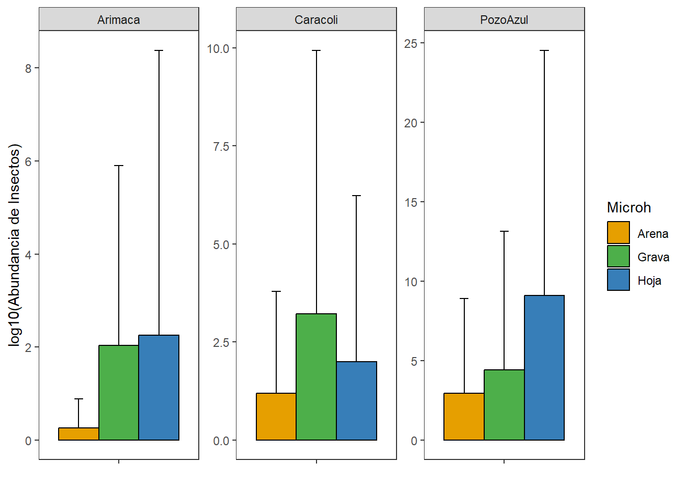
Paso 5. Diversidad alfa
5.1 Diversidades alfa - Estimadores clásicos
# Nombres abreviados de los taxones
biol1 <-
biol[,c(-2)] %>%
rename_with(~ abbreviate(.x, minlength = 4))
# Promedios de abundancia de los taxones
biol4 <-
biol1 %>%
group_by(Siti) %>% # Agrupamiento por sitios
summarise(across(everything(), ~ sum(.x, na.rm = TRUE)))
# Crear un nuevo dataframe con las dos columnas seleccionadas
biol4 <- data.frame(Sitio= biol4[,1], biol4[, ab])
biol4 %>%
kbl(caption = "", booktabs = F,longtable = T) %>%
kable_classic(full_width = F, html_font = "Cambria")| Siti | Batd | Elmd | Lptp | Prld | Lptc | Smld | Chrn | Lbll | Veld | Hydrp | Ncrd | Lpth | Cryd | Ptld | Gmph |
|---|---|---|---|---|---|---|---|---|---|---|---|---|---|---|---|
| Arimaca | 45 | 23 | 17 | 6 | 4 | 18 | 3 | 0 | 2 | 3 | 1 | 5 | 1 | 1 | 0 |
| Caracoli | 18 | 40 | 35 | 11 | 12 | 13 | 16 | 8 | 1 | 15 | 9 | 10 | 1 | 2 | 3 |
| PozoAzul | 95 | 65 | 49 | 69 | 41 | 17 | 19 | 29 | 34 | 15 | 21 | 6 | 10 | 9 | 7 |
#
biol5 <- biol4[,-1]
# Estimadores de diversidad alfa (segun Borcard et al. 2018)
N0 <- rowSums(biol5 > 0) # Riqueza de especies
N0 <- specnumber(biol5) # Riqueza de especies (alterno)
H <- diversity(biol5) # Entropía de Shannon (base e)
N1 <- exp(H) # Diversidd de Shannon (base e)
N2 <- diversity(biol5, "inv") # Diversidad de Simpson (dominancia)
J <- H / log(N0) # Equidad de Pielou (evenness)
E10 <- N1 / N0 # Equidad de Shannon (Razón de Hill)
E20 <- N2 / N0 # Equidad de Simpson (Razón de Hill)
# Base de datos con los valores de los esimadores de diversidad alfa
d.alfa <- data.frame(Sitio= biol4[,1], q_0= N0,
q_1= round(N1,1), q_2= round(N2,1),
Equidad_J= round(J,2))
# Edición de la tabla para su impresión
d.alfa %>%
kbl(caption = "", booktabs = F,longtable = T) %>%
kable_classic(full_width = F, html_font = "Cambria")| Sitio | q_0 | q_1 | q_2 | Equidad_J |
|---|---|---|---|---|
| Arimaca | 13 | 7.0 | 5.1 | 0.76 |
| Caracoli | 15 | 10.7 | 8.7 | 0.87 |
| PozoAzul | 15 | 11.2 | 9.2 | 0.89 |
5.2 Curvas RAD (Localidades)
# Lectura de la base de datos
datos1 <-read_xlsx("datos.gral.xlsx","Taxones2")
# Nombres abreviados de los taxones
datos1 <-
datos1 %>%
rename_with(~ abbreviate(.x, minlength = 4), .cols = -1)
# Reestructurar los datos en formato largo
datos1 <-
datos1 %>%
pivot_longer(
cols = -c(Sitio),
names_to = "Taxas",
values_to = "Abundancia"
)
# Convertir 'Sitio' y 'Taxas' en factores
datos1$Sitio <- as.factor(datos1$Sitio)
datos1$Taxas <- as.factor(datos1$Taxas)
# Calcular la suma de abundancias por taxón y grupo
datos1 <- datos1 %>%
group_by(Sitio, Taxas) %>%
summarise(Abundancia = sum(Abundancia, na.rm = TRUE), .groups = "drop")
# Insertar rango basado en abundancia descendente
datos1 <- datos1 %>%
group_by(Sitio) %>%
mutate(Rango = rank(-Abundancia, ties.method = "min")) %>%
ungroup()
# Calcular abundancia relativa
datos1 <- datos1 %>%
group_by(Sitio) %>%
mutate(Ab_rel = round(Abundancia / sum(Abundancia), 3)) %>%
ungroup()
# Seleccionar los 15 taxones más abundantes
top15_taxas <- datos1 %>%
group_by(Taxas) %>%
summarise(Total_Ab_rel = sum(Ab_rel), .groups = "drop") %>%
top_n(15, Total_Ab_rel) %>%
pull(Taxas)
# Filtrar datos para los 15 taxones seleccionados
datos1 <- datos1 %>%
filter(Taxas %in% top15_taxas)
# Impresión de la tabla con los seis (6) primeros datos (filas)
head(datos1) %>%
kbl(caption = "", booktabs = F,longtable = T) %>%
kable_classic(full_width = F, html_font = "Cambria")| Sitio | Taxas | Abundancia | Rango | Ab_rel |
|---|---|---|---|---|
| Arimaca | Batd | 45 | 1 | 0.319 |
| Arimaca | Chrn | 3 | 9 | 0.021 |
| Arimaca | Cryd | 1 | 14 | 0.007 |
| Arimaca | Elmd | 23 | 2 | 0.163 |
| Arimaca | Hydrb | 4 | 7 | 0.028 |
| Arimaca | Hydrp | 3 | 9 | 0.021 |
library(ggrepel) # insertar rótulos a los puntos
# Ordenar los niveles de los paneles
datos1$Sitio <- factor(datos1$Sitio,
levels = c("Arimaca","Caracoli","Pozo Azul"))
# Figura - curvas RAD
ggplot(datos1,
aes(x = Rango, y = Ab_rel, color = Taxas, label = Taxas)) +
geom_point(size = 3) +
geom_text_repel(aes(label = Taxas), hjust = 1, vjust = 1.5, size = 3,
box.padding = 0.4, point.padding = 0.2,
segment.color = "black", # Color de las líneas de conexión
segment.linetype = "dashed", # Líneas punteadas
show.legend = FALSE) +
geom_line(color = "blue") +
scale_x_continuous(breaks = seq(0, max(datos1$Rango), by = 4), # Personalizar eje x
expand = expansion(add = c(0, 0.5))) + # Iniciar en 0 y extender
scale_y_log10() +
labs(x = "Rangos de Taxas",
y = expression(log[10]~(Abundancia~Relativa)),
color = "Taxas") +
facet_wrap(~Sitio, nrow = 1) +
theme_bw() +
theme(panel.grid=element_blank(),
legend.position = "none", # ← Oculta la leyenda
strip.text = element_text(face = "bold") # Nombres de panel en negrilla
)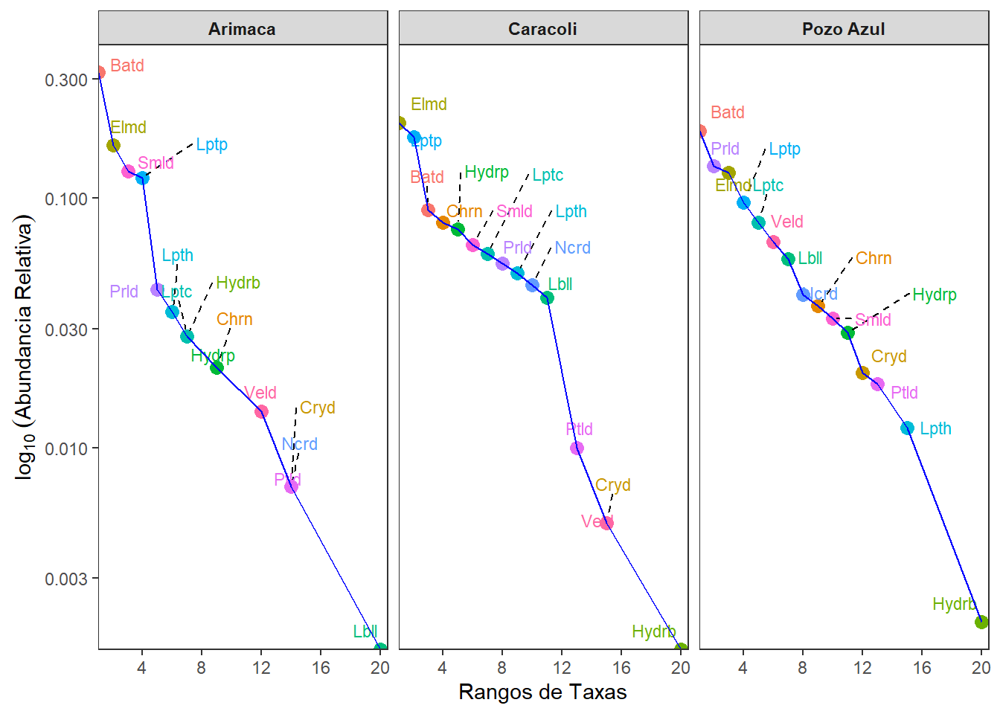
# Generar el gráfico
ggplot(datos1,
aes(x = Rango, y = Ab_rel, color = Taxas, label = Taxas)) +
geom_point(size = 4, shape = 21, fill = "white", color = "black", stroke = 1.5) +
geom_text_repel(
aes(label = Taxas), hjust = 1, vjust = 1.5, size = 3.5,
box.padding = 0.4, point.padding = 0.2,
segment.color = "gray70", segment.linetype = "dashed",
show.legend = FALSE) +
geom_line(color = "blue") +
scale_x_continuous(breaks = seq(0, max(datos1$Rango), by = 4)) + # Eje X ascendente
scale_y_log10() + # Escala logarítmica en el eje Y
scale_color_manual(values = colorRampPalette(c("darkred", "firebrick",
"tomato", "orange"))(15)) + # Colores personalizados
labs(x = "Rangos de Taxas",
y = expression(log[10]~(Abundancia~Relativa))) +
facet_wrap(~Sitio, nrow = 1) +
theme_bw(base_size = 14, base_family = "Arial") +
theme(
panel.grid = element_blank(),
panel.background = element_rect(fill = "gray98", color = NA),
plot.background = element_rect(fill = "white"),
strip.background = element_rect(fill = "gray80", color = "gray50"),
strip.text = element_text(face = "bold", size = 12, color = "black"),
axis.text = element_text(color = "gray30"),
axis.title = element_text(face = "bold"),
legend.position = "none"
) 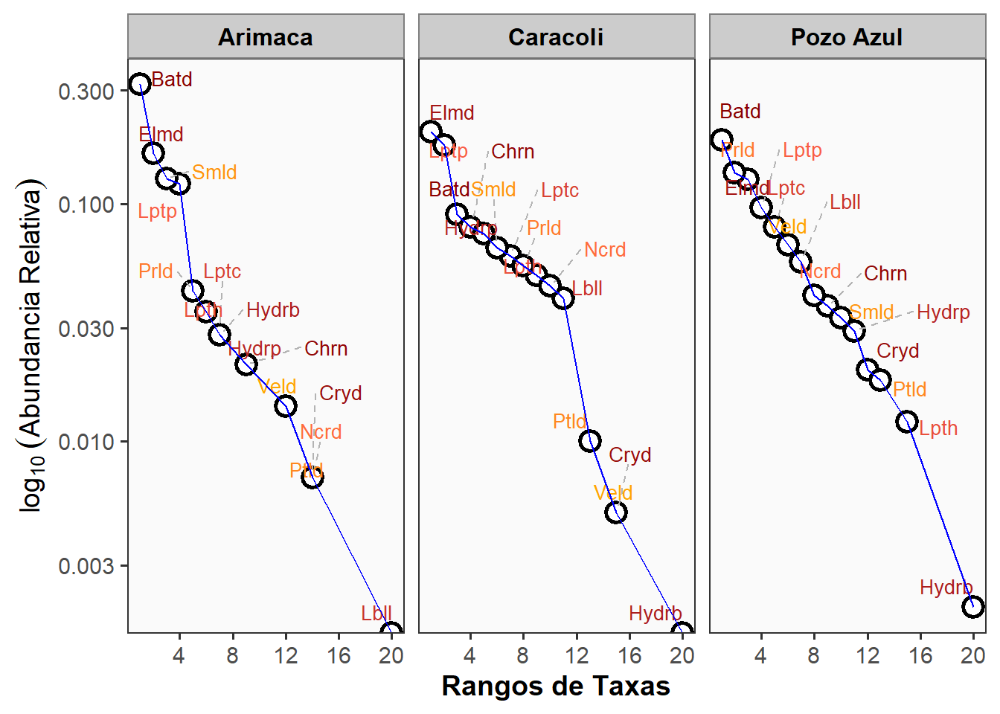
Variante de Ab-rel calculada de la abundancia total global de todos los sitios.
Calcular abundancia total global
total_abundancia <- sum(datos1$Abundancia, na.rm = TRUE)
Calcular abundancia relativa respecto a la abundancia total global
datos1 <- datos1 %>% mutate(Ab_rel = round(Abundancia / total_abundancia, 3))